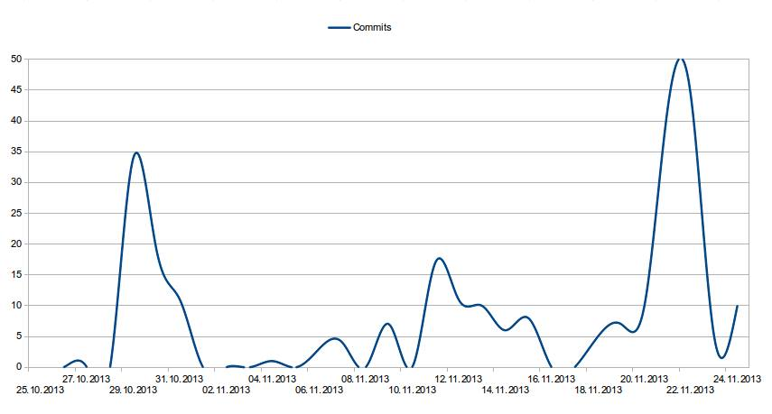

Sted: Høgskolen i Oslo og Akershus, fakultet tkd
Fag: Webprosjekt.
25.oktober.
Første møte i gruppen.
Vi setter oss inn i hvordan GitHub fungerer, og hvordan vi kan bruke det som et verktøy for å samarbeide og dele koden vår.
Mandag 28.
Roller blir fordelt og vi begynner å skrive forrapporten.
Joakim Tømmer blir gruppeleder, Innholds og Media ansvarlig.
Aisha Nasir: JQuery/Javascript Ansvarlig.
Silje Kristine: Bringsli PHP og Korrektur ansvarlig.
Anders Simonsen: Design og CSS ansvarlig.
"Rollene har i ettertid blitt noe forskjøvet.
Vi har vel alle blitt litt altmuligmann eller den "digitale vaktmesteren" som gjør litt av hvert.
Lederansvaret har etterhvert også blitt fordelt utover medlemene ved behov."
Vi lagde ferdig en lett skisse i paint og sekunder senere begynte anders å jobbe frem et design forslag som har
vært våres blueprint hele veien.
Tirsdag 29.
Rapporten begynner å ta form. Vi blir enige om hvilke teknologier vi skal benytte oss av.
Og vi blir enige om at vi skal lage en webside for et fiktivt lydstudio,
som kan selges videre til ordentlige lydstudioer som en god webløsning.
Vi ser på sider som vi synes har interressante design aspekter.
Joakim kommer med en ide til et easter egg og begynner innhenting av test personel.
Onsdag 30.
Anders begynner å jobbe med å lage en grunnramme for siden i HTML5 og CSS3.
Joakim Oppretter alle html og php dokumentene i github.
Silje fullførte php kodingen av side treet.
30. oktober - 1. november:
Anders jobber videre med ideen til easter egget, og begynner å skrive kode til easter egget.
Lager et en oktavs piano i HTML5 og CSS3,
Genererer lydsamples av toner i Audacity. Audacity er en enkel audio editor
Anders skriver også et lite javascript som spiller av tangentenes respektive toner når tangenten klikkes,
i tillegg bytter de farge når man klikker før fargen settes tilbake til originalfargen.
Silje skriver/retter på tekst
6. november:
Anders er ferdig med et script til easter egget som knytter spesifikke taster til spesifikke tangenter på pianoet.
Joakim har begynt å se lyset med et booking system
Silje skriver på rapport
13. - 15.nov
Anders jobber med å skrive nytt javascript til bildegalleriet.
Fyller inn informasjon
20. nov.
Anders koder en button inspirert av en fade-control på mixebord etter input fra Joakim. Denne legges i book studio siden, og implementerer en spilleliste fra soundcloud.
21. nov.
Anders og Joakim samarbeider med å designe book-musiker siden.
22. nov.
Silje fullfører kontaktskjemaet på siden kontakt oss i PHP.
Vi tar bilder og samarbeider om å fullføre siden om oss.
Joakim begynner på en reserveløsning for booking-systemet.
Jeg synes at det har vært et utrolig spennende prosjekt, og gøy å jobbe med. Akkurat passe med tid å bruke på prosjektet- litt kjedelig å ikke kunne vie all den tiden man kunne ønske til det, da man har mye annet å gjøre i andre fag. Jeg var litt skeptisk til å jobbe på tvers av linjer, (hovedsakelig på grunn av ulik timeplan) men det viste seg å gå overraskende fint. Når man er såppas ny i faget er det veldig lærerikt å se hvordan andre jobber, og veldig deilig å føle at du har noe å komme med fordi man ikke har lagt vekt på de samme tingene i tidligere oppgaver.
Jeg vil si at for min egen del har det ikke vært så veldig problematisk å kode ideene, men det skal sies at det er en litt annerledes og ny måte å jobbe på i forhold til hva jeg er vant til fra før. Det er klart ikke alt alltid fungerer som det skal med en gang, men jeg forventet da ikke noe annet. Vi har vært produktive fra starten av og brukt god tid på hver og enkelt oppgave fordi det er viktig for meg (og de andre på gruppen) at ting fungerer som det skal, og at jeg har et ferdig produkt jeg er stolt av å vise frem når vi er ferdige.
Vi har brukt facebook som kommunikasjonsmiddel hver dag etter skoletid som har fungert veldig bra, i tillegg til å ha møter der vi diskuterer eller viser frem forslag, hjelper hverandre og kommer med innspill.
Jeg føler at jeg har fått god kontakt med alle på gruppen, og jeg har hvert fall fått inntrykk av at alle tør å komme med sine innvendinger og ideer. Jeg har selv følt at jeg kan henvende meg til alle i gruppen hvis det er noe jeg står fast ved, eller ikke får helt til.
For min egen del så var det ikke så veldig viktig hva siden handlet om og innholdet, heller det at siden er lett oversiktlig, nyttig og informativ. (At den gjør det den skal på best mulig måte) Jeg føler at sammensetningen av våre forskjellige personligheter, meninger og personlige smak kommer godt frem i nettsiden, uten at det blir rotete og usmakelig. Jeg vil si at vi har brukt det til vår fordel med en spennende og varierende nettside.
GitHub har fungert helt greit, tok litt tid å komme inn i det, og jeg tror jeg fortsatt har veldig mye mer å lære derfra, da ikke alt fungerte helt som jeg ville at det skulle gjøre til en hver tid. Jeg fikk alt i alt et godt inntrykk av GitHub, og er sikker på at når jeg er blitt litt bedre kjent med det, blir det mye lettere å ta i bruk.
Jeg er veldig fornøyd med resultatet vårt, men hvis det er noe jeg ville gjort annerledes så måtte det kanskje ha vært å bruke mer tid på logoen, gjøre det mer innbydende og utstående. Men vi valgte først og fremst å fokusere på at den skulle se ganske ”plain” ut i førsteomgang, for å tiltrekke en bred potensiell kundegruppe. Men som sagt, vi valgte å ikke fokusere for mye på dette i førsteomgang og jeg ser ikke på det som det mest viktige i forhold til denne oppgaven heller. Jeg jobbet lenge med blant annet med å få til login.php, men kom på i siste liten at bruk av @ var ugyldig og det var da veldig kjedelig å måtte gi opp denne.
Jeg har trivdes veldig godt med å jobbe i gruppe, sikkert mye fordi jeg ble veldig fornøyd med gruppen min. Som jeg skrev litt lenger oppe her, synes jeg det har vært veldig lærerikt fordi vi har lagt vekt på forskjellige ting i de forrige oppgavene vi har hatt. Man får øynene opp for andre måter å gjøre ting på, og jeg tror det er sunt og veldig gøy å dele erfaringer man har hatt tidligere med hverandre. Og selvfølgelig, lære nye ting sammen og vokse som et team/gruppe.
Jeg synes det har vært både morsomt og lærerikt å jobbe i gruppe. Jeg føler at det gjennom gruppearbeid blir et større press på til å konstant prestere, og skape resultater. Når jeg bare har ansvar for meg selv, klarer jeg ikke å presse meg selv til å jobbe effektivt før det nærmer seg slutten. Å skuffe gruppa og dra ned helheten på produktet er ikke akseptabelt. Derfor har jeg jobbet ekstra hardt og jevnt med prosjektet, og tatt på meg oppgaver jeg ikke helt visste hvordan jeg skulle få til. Dette har igjen ført til at jeg har måttet lære meg mere Javascript og Jquery, noe jeg var nesten helt blank på før vi startet med prosjektet. Det har vært viktig for meg å se konstant fremgang, og å kunne se det helheten av gruppas arbeid sakte knyttes sammen. Jeg syntes det var helt greit å være ansvarlig for sidens design, jeg liker at ting ser estetisk rent ut noe jeg håper reflekteres av siden. Jeg liker godt å jobbe med CSS og synes det er et intuitivt og lett verktøy å bruke. Jeg tror arbeidsmetoden som reflekteres mest i arbeidet vårt er extreme programming, hvor vi bare har spydd ut kode. Når noe ikke har fungert slik vi hadde tenkt det, har vi gått tilbake til ideen og sett om vi kunne forenkle den og gjøre koden mindre og lettere å jobbe med. Gruppa har fungert relativt greit, hvor to av oss har tatt litt ekstra ansvar og delt litt på ledelsen. Mens de to andre har jobbet målrettet og bra for å nå oppgavene de har blitt satt til. Vi har hatt en åpen dialog, og prøvd å hjelpe hverandre med å løse problemer. Men det er ikke alltid det har vært like lett, noen ganger har vi møtt veggen, dette har ført til at vi har måttet starte fra scratch og finne en annen løsning på problemet(xp). Jeg tror vi alle er enige i at det har vært veldig lærerikt å jobbe i gruppe. GitHub har vært et greit hjelpemiddel for å dele kode, men det har sine begrensninger ved at design-elementer som bilde-filer og lyd-filer bare kan lastes opp av eieren av repositoriet. Dette har vi løst ved å bruke dropbox til å sende Joakim download linker, slik at han har lastet det opp. Når sannt skal sies har jeg ikke satt meg 100% inn i GitHub enda, men det er nok noe jeg blir nødt til å gjøre etterhvert. Jeg er ganske fornøyd med resultatet vårt, med tanke på det interaktive innholdet føler jeg at vi har overgått oss selv. Hadde vi hatt bedre tid kunne vi ha satt oss litt inn i hvordan man tilpasser siden til mobile enheter, tilpasse språk osv. Siden vår har fortsatt et stort forbedrings potensiale, men jeg tror den er like god som mange andre studio webløsninger. Jeg har innsett at HTML, CSS og Javascript kan brukes til ganske mye, og at det igrunn bare er fantasien som setter stopper. Det hadde vært kult å satt seg litt inn i Phonegap (eller lignende teknologier) hvor man kan pakke HTML, CSS og Javascript kode inn i en wrapper og lage apps for Android og IOS.
Jeg trives mye å jobbe med prosjekt med snille folk. Men det var litt hardt tid fordi jeg hadde mange andre fag. Derfor hadde jeg mye å gjøre mellom denne tiden. Men uansett det var gøy å jobbe med prosjekten.Jeg lærte mye fra de andre. Jeg tror det var god tid for å bli kjent med hverandre.Vi har gjort mange nye ting som vi gjorde ikke i obliger og jeg vet ikke on denne heller.
Jeg var ansvarlig for javascript og jquery. Det har vært litt problematisk å kode ideen. Hvis fikk jeg noen feil så snakket jeg med andre gruppe medlemene for å fikse opp problemen. Vi var ikke profesjonell så selvfølglig vi har fått mange feil. Men jeg prøver og prøver for å fikse feilen eller finne noe nytt som kan fungerer. Jeg tror det er en bra måte for å lære noe nytt.
Vi har brukt github og den fungerte veldig bra. Før vet jeg ikke mye om github. Men nå jeg har lært mye. Jeg tror det er en bra hjlpemiddel fordi hvis man kan ikke møte. Så man kan bruke github for å vise hva de har gjort. Eller hvis det er noen feil så andre kan fikses opp. Jeg fikk et godt intrykk av github. Nå er det mye lett for meg å bruke github fra før og jeg tror det kan bli bedre mer.
Vi laget en gruppa på facebook for å kommunisere med hverandre.Vi brukte den mest for å bestemme om gruppe møter. Den fungerte utrolig bra.
Jeg er fornøyd med resultater fordi vi har gjort alt som vi har lært i semesteret. Vi har brukt alle teknologier som hadde lært.Jeg tror vår siden viser hvor hardt vi jobbet.Jeg trives mye å jobbe med gruppe.
Prosjektet har vært veldig spennende og læringsrikt å jobbe med. Da gruppen kom sammen på papir var vi allerede 1 uke bak de som hadde fått gruppe, noe som gjorde at vi var nødt til å være raske med å starte planlegging og arbeid. I bakhodet fra tiden som aktiv musiker hadde jeg en hel del ideer som kunne brukes i forbindelse med prosjektet. Ideene jeg hadde og la frem for gruppen kommer fra det musikere rundtom har savnet litt innen dagens nett verden. Ideene mine ble hørt med en gang da det virket interresant og valget falt derfor på en av dem. Jeg tror at vi gikk igjennom ide drøftings prosessen litt for fort i frykt for at vi kom til å miste tid og ikke minst at vi alerede lå en uke bak de som allerede hadde fått en gruppe. Den store utfordringen vi hadde forann oss var at ingen kjente seg noe spesielt flinke på noen omeråder innenfor web utvikling, og vi valgte derfor en oppgave til ideen som vi alle kunne ha en fot innenfor. Oppgaven ble da "nettside for bedrift"; en på overflaten: veldig basic oppgave, men med god grobunn for videre utvikling. Valget av oppgaven gjorde det mulig for oss å ta til å oss kunnskap på det nivået vi alle var på innenfor web utvikling og bygge videre på produktet i takt med egen lærings kurve. Sluttresultatet bærer preg av dette, og når vi tenker tilbake til starten har vi implementert en god del ny kunnskap. Spørsmålet om hvem som skulle være gruppeleder var veldig åpent en stund, men noen må ta på seg den jobben. Etter en ukes tid med arbeid og etter valg av emne, og oppgave, tilbydde jeg meg selv å være gruppeleder, noe som ingen hadde noe å si i mot. Leder har jeg vært tidligere i forbindelse med jobb, så det var naturlig å tilby å være det. Men det å være gruppeleder viste seg å være veldig annerledes. Med tanken på at vi har opptil flere opppgaver som skal skrives og gjøres i andre fag er det umulig å ta rollen helt 100% og man kan heller ikke "piske" folk rundt. Derfor valgte jeg selv å ligge litt bakpå som gruppeleder og heller være som en del av gruppa, værken over eller under, og prøve å tilpasse gruppens naturlige flyt ved å komme med inspill, hjelpe til og rettte opp, men med forsøk på å holde den røde tråden igjennom. Dette gjorde til at lederskapet lå i flyt i gruppen, noe som var ustressende og bra. I ettertid kan man nesten tenke seg at alle var gruppeledere, men med en som peker litt ekstra hvor vi skulle gå, enda tilogmed det var en felles beslutning. Å kode ut ideen var en utfordring i seg selv, men det gikk som regel i boks med godt gruppesamarbeid. Hovedproblemet som tidligere nevnt ved kodingen av ideen og oppgaven var at ingen hadde noen spesiell god kunnskap innen webutviklings verktøy, men problemene ble løst ved at vi ofte, gikk sammen og forsøkte å løse det som en gruppe ved å kaste ideer og tanker rundt samtidig som vi leste og lærte oss måten å få det gjort på. Jeg ønsket å fullføre booking systemet til siden, men det var ikke nok tid til å få det gjort, noe som veldig trist ettersom det lå mye arbeid bak det, men har lært meg veldig mye av å holde på med det. Gruppen har fungert helt greit. Alle ideer har blitt hørt, og alle har fått muligheten til å få frem ideer. Å jobbe i gruppe var gøy, men det kunne vært enda bedre om det var mulig å vie litt mer tid og deadline ikke hadde kommet så brått på. Det har ikke fungert helt 100% men det gikk nå bra til slutt
"Et lite avsnitt om fremgangen vi har hatt"
